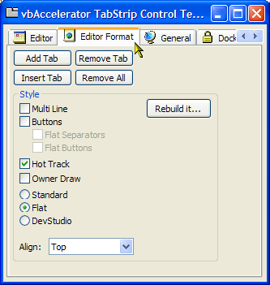

VB5 TabStrip Control Binary (19K)
VB5 TabStrip Control Binary (19K)
 VB5 TabStrip Control Demonstration (18K)
VB5 TabStrip Control Demonstration (18K)
 VB5 TabStrip Control Full Source (57K)
VB5 TabStrip Control Full Source (57K)
 VB6 TabStrip Control Binary (20K)
VB6 TabStrip Control Binary (20K)
 VB6 TabStrip Control Demonstration (16K)
VB6 TabStrip Control Demonstration (16K)
 VB6 TabStrip Control Full Source (57K)
VB6 TabStrip Control Full Source (57K)
 vbalTabStrip Interface Definition (2K)
vbalTabStrip Interface Definition (2K)
 Bugs: 1 / 1
Bugs: 1 / 1
 Issues: 2 / 2
Issues: 2 / 2
 Questions: 0 / 0
Questions: 0 / 0
 7 Jan 2003
7 Jan 2003
Added XP Visual Styles Manifest
 Ole Guid and interface definitions (OleGuids.Tlb)
Ole Guid and interface definitions (OleGuids.Tlb)
 Adding XP Visual Styles to Your Visual Basic Application
Adding XP Visual Styles to Your Visual Basic Application
 Subclassing Without The Crashes
Subclassing Without The Crashes
 vbAccelerator ImageList Control and Class v2.0
vbAccelerator ImageList Control and Class v2.0

vbAccelerator TabStrip Control
An implementation of the ComCtl32 TabStrip control in VB with thin edge and owner-draw style support
This control provides a fully functional implementation of the ComCtl32 TabStrip control. The control implements all the latest features, including support for Owner-Draw tabs, and is entirely coded in VB
Features of the Control
- Change tab alignment or from tab to button style at run-time.
- Implements hot-tracking (mouse-over highlighting) of tabs.
- Make buttons appear flat, with optional flat toolbar-style separators.
- Easily add, insert and remove tabs.
- Responds to right clicks in the tab area, allowing custom menus to be shown (check out the PopupMenu ActiveX DLL for cool pop-up menus with icons you can easily create and destroy at run-time).
How to Use the Control
Documentation for the Tab Control is available in Rich text format. This documentation was created using the ActiveX Documenter.